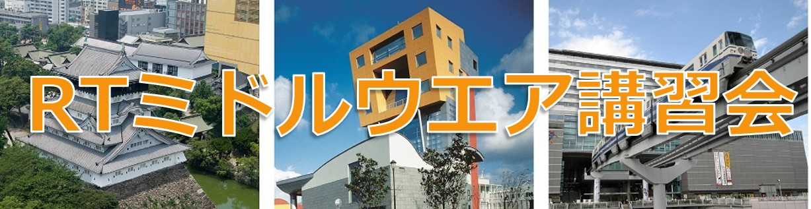

ROBOMECH2018講習会(2018年6月3日(日))

✏️ Edit this page on GitHub

#contents
ROBOMECH2018講習会
毎年恒例となりました、ROBOMECHでのRTミドルウエア講習会を今年も開催いたします。
RTミドルウエアはロボットシステムの構築を効率化するソフトウエアプラットフォームです。RTコンポーネントと呼ばれるモジュール化されたソフトウエアを多数組わせてロボットシステムを構築するため、システムの変更、拡張がしやすいだけでなく、既存のソフトウエア資産をの継承や他人が作ったコンポーネントとの組み合わせも容易になります。講習会では、RTミドルウエアの概要、RTコンポーネントの作成方法について解説します。受講者には各自ノートPCをお持ちいただき、実習形式で実際にRTコンポーネントを作成、既存のコンポーネントなどと組み合わせて簡単なシステムを構築していただきます。本講習会を受講することで、RTコンポーネント設計方法、実装の仕方、システムの作り方をマスターすることができます。
日時・場所
- 主催: 国立研究開発法人 産業技術総合研究所
- 協賛: ROBOMECH2018, (公社)計測自動制御学会システムインテグレーション部門
- 日時: 2018年6月3日(日), 10:00～17:00
- 場所: 西日本総合展示場新館 3F 304
- アクセス: 交通アクセス
- 詳細はROBOMEC2018 Webページをご覧ください。
- 聴講料: 無料
- 可能な限りROBOMECH2018への参加登録をお願いします。;
- 定員: 第1部50名, 実習（第2, 3部）30名程度を予定しております。定員になり次第申し込みは終了させていただきます。第1部のみご参加の方は申し込み不要です。
- 参加登録フォームはこちら
- 講習会のみの参加の場合ROBOMEC2018への参加登録は不要です。
過去の講習会
こちらから、過去の講習会の資料および写真などがご覧いただけます。
- ROBOMECH2017
- ROBOMECH2016
- ROBOMECH2015
- ROBOMECH2014 (2014年から ROBOMEC->ROBOMECHになりました。)
- ROBOMEC2013
プログラム
| 10:00 -10:50 | **第1部(その1)：インターネットを利用したロボットサービスとRSiの取り組み2018 ** **担当**：成田雅彦 氏（産業技術大学院大学） |
| 11:00 -11:50 | **第1部(その2)：OpenRTM-aistおよびRTコンポーネントプログラミングの概要** **担当**：安藤慶昭 氏 (産総研) **概要**： RTミドルウェア(OpenRTM-aist)はロボットシステムをコンポーネント指向で構築するソフトウェアプラットフォームです。RTミドルウェアを利用することで、既存のコンポーネントを再利用し、モジュール指向の柔軟なロボットシステムを構築することができます。RTミドルウエアについて、その概要およびRTコンポーネントの機能やプログラミングの流れについて説明します。 |
| 11:50 -12:00 | 質疑応答・意見交換 |
| 12:00 -13:00 | 昼食 |
| 13:00 -14:30 | **第2部: RTコンポーネントの作成入門** **担当**：宮本信彦 氏 (産総研) **概要**：RTシステムを設計するツールRTSystemEditorおよびRTコンポーネントを作成するツールRTCBuilderの使用方法について解説するとともに、RTCBuilderを使用したRTコンポーネントの作成方法を実習形式で体験していただきます。 チュートリアル(第2部、Windows) チュートリアル(第2部、Ubuntu) 資料(zipファイル) |
| 14:45 -17:00 | **第3部：RTシステム構築実習** **担当**：宮本信彦 氏 (産総研) **概要**：OpenRTM-aistを利用してロボットを制御するプログラムを実際に作成します。 チュートリアル(第3部) |
講習会に参加される方へ
実習には以下の準備が必要です。
必要機材
- ノートPC
- OS: Windowsをご用意下さい
- Eclipseが動作する程度のスペックが必要です
- メモリ: 1GB以上
- CPU: Core2Duo以上
- HDD空き: 5GB以上
Windowsのファイアウォールは必ず切っておいてください。; セキュリティーソフトにもファイアウォールが設定されている場合がありますので、そちらもOFFにしておいてください。;
&aname(software_install);
事前にインストールするソフトウエア
あらかじめインストールしておくべきソフトウエアは以下のとおりです。以下のリンクをクリックし、ファイルをダウンロード・インストールしてください。
一部のリンクはダウンロードページへ飛びますので、飛んだ先のページ内で適切なファイルをそれぞれダウンロードしてください。
Visual Studio
- Visual Studio 2017推奨
- インストールには時間がかかりますので、「VisualStudio2017インストール方法」を参考に事前にインストール・初回起動を完了しておこしください。
OpenRTM-aist 1.2.0-RC1版
- 一つのインストーラですべての言語とVisual Studioのバージョンに対応しています。32bit/64bitのみ選択してください。（64bit推奨）
- OpenRTM-aist 1.2.0-RC1版(64bit) 5/30版が最新です。（OpenRTM-aist-1.2.0-RC1_x86_64_0530.msi）
- OpenRTM-aistのインストールの際、インストールしているVisual Studioのバージョン選択する画面があります。デフォルトはvc2017の設定になっています。
Python
- Python2.7.15(64bit)
- OpenRTM-aistやPyYAMLをインストールする前にインストールしてください;
その他
以下のソフトウェアも必須です。忘れずにインストールしてください。
- PyYAML(64bit)
- CMake
- Doxygen
- 使い慣れたエディタ: EclipseやPythonに付属のエディタでも構いませんが、使い慣れたエディタが入っていた方が良いでしょう